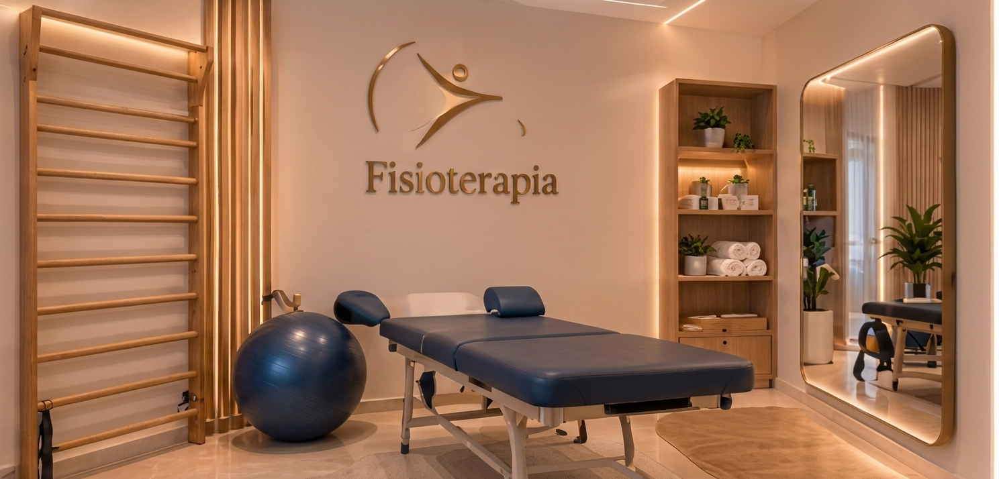
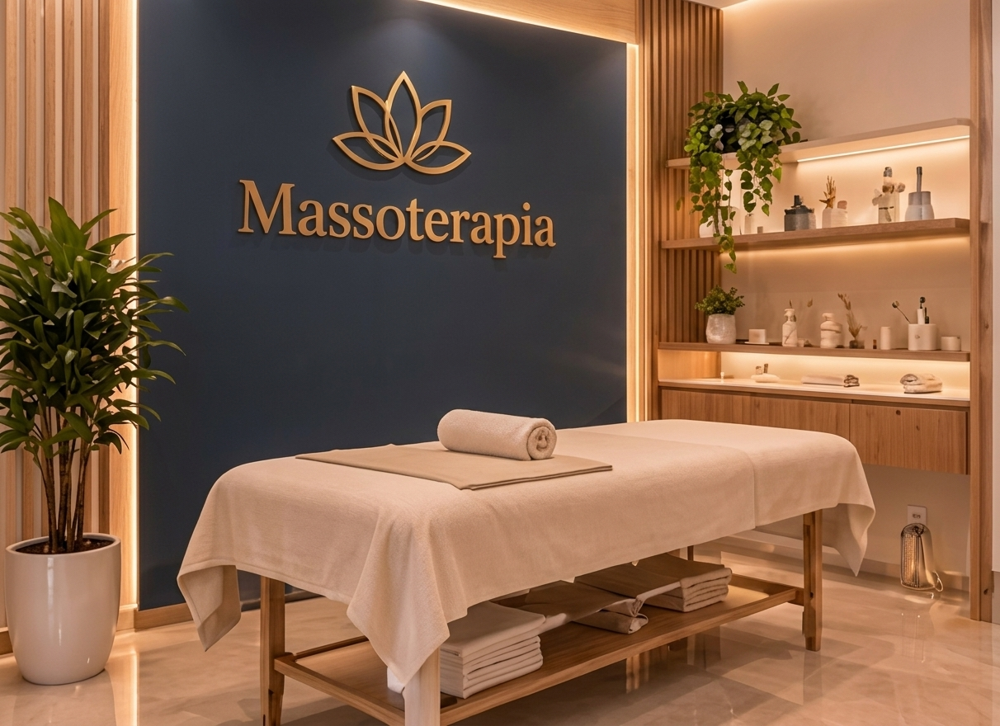

Missão
Promover saúde com acolhimento, ética e atenção individual.
Clínica de saúde integrada
Nutrição, fisioterapia, cardiologia e massoterapia no mesmo lugar. Os profissionais conversam entre si para que o seu cuidado seja completo, sem você precisar repetir sua história em cada consulta.
Saúde não é uma peça isolada: alimentação, movimento, coração e descanso influenciam uns aos outros.
Uma clínica pensada para quem quer ser ouvido.
A Flor de Ouro nasceu da ideia de que cada pessoa tem uma história, e que o tratamento só funciona quando respeita essa história. Reunimos diferentes áreas da saúde para que seu acompanhamento seja organizado, claro e próximo.
Cada atendimento começa com escuta. Explicamos tudo em linguagem simples, sem pressa, e montamos o plano de cuidado junto com você.
Texto demonstrativo: adapte à história real da clínica.
Promover saúde com acolhimento, ética e atenção individual.
Ser referência em cuidado integrado na nossa comunidade.
Respeito, empatia, qualidade técnica, transparência e cuidado contínuo.
Quatro áreas que se complementam.
Alimentação orientada ao seu corpo, sua rotina e seus objetivos.
Conhecer serviçosRecuperação do movimento, alívio de dores e prevenção de lesões.
Conhecer serviçosAcompanhamento do coração e prevenção de doenças cardiovasculares.
Conhecer serviçosTécnicas manuais para relaxar, aliviar tensões e restaurar o bem-estar.
Conhecer serviçosConheça os espaços da clínica, pensados para o seu conforto.

Você é tratado pelo nome e ouvido com atenção.
Equipe com formação e atualização constantes.
Espaço confortável, calmo e acessível.
Cada plano de cuidado é feito sob medida.
Os profissionais trocam informações, com a sua autorização.
Acompanhamos sua evolução, não só a consulta.
Do primeiro contato ao acompanhamento, você sabe o que vem a seguir.
Fale com a recepção pelo WhatsApp, telefone ou e-mail.
Na primeira consulta, conversamos sobre sua rotina e seus objetivos.
Montamos juntos um plano de cuidado claro e realista.
Retornos regulares para ajustar o plano conforme o seu progresso.
Dicas simples de bem-estar para começar hoje.
Beba água ao longo do dia, mesmo sem sentir muita sede.
Um sono regular ajuda o corpo e a mente a se recuperarem.
Pausas para alongar e caminhadas curtas já fazem diferença.
Prefira alimentos naturais e de várias cores nas refeições.
Dicas gerais, que não substituem a orientação de um profissional.
Você escolhe a especialidade, agenda o horário e é recebido por um profissional que faz uma conversa inicial e propõe um plano de cuidado.
Pelo botão do WhatsApp, por telefone ou por e-mail. Nossa recepção indica o melhor horário para você.
Nutrição (nutricionista, técnico em nutrição e dietética e nutrólogo), fisioterapia, cardiologia e massoterapia.
Não. Você pode agendar diretamente com qualquer especialidade. Se já tiver exames, laudos ou pedidos médicos, leve na primeira consulta: eles ajudam o profissional a planejar o seu cuidado.
Em geral, de 40 a 60 minutos na primeira consulta, que inclui uma conversa inicial. O tempo exato é informado no agendamento.
O profissional define com você a frequência dos retornos conforme a sua evolução. No início costumam ser mais próximos e vão se espaçando com o tempo.
Sim. Com a sua autorização, os profissionais trocam informações para que o cuidado seja alinhado, sem você precisar repetir a sua história.
Sim. Suas informações e seu prontuário são tratados com sigilo e só são compartilhados entre os profissionais com a sua autorização.
O endereço, os horários e o mapa estão na seção Contato, no fim desta página.
WhatsApp, telefone e e-mail, todos listados na seção Contato.
Dados demonstrativos. Substituir pelos reais.
Nutrição
Três profissionais que atuam juntos, do plano alimentar do dia a dia ao acompanhamento clínico.
Escolha pelo que você precisa agora. A recepção também ajuda a decidir.
Nutricionista
Cria o seu plano com base na rotina, nos gostos e nos objetivos, sem dietas genéricas.
Técnico em Nutrição e Dietética
Ajuda a executar o plano no dia a dia, com orientações práticas e acompanhamento próximo.
Nutrólogo
Médico especialista que avalia o organismo como um todo: exames, carências e metabolismo.
Um caminho simples, no seu ritmo.
Entendemos sua rotina, histórico e objetivos.
Montamos juntos um plano realista, sem dietas genéricas.
Retornos para ajustar o plano conforme sua evolução.
O plano respeita suas preferências e sua rotina.
Receitas e substituições fáceis de seguir.
Ajustes constantes conforme a sua evolução.
Trabalho em conjunto com fisioterapia e cardiologia.
Nada de complicado: o que você tiver já ajuda.
O nutricionista monta o plano alimentar. O nutrólogo é médico e avalia também exames, carências e a necessidade de suplementação.
Não necessariamente. O plano é montado com você, considerando seus gostos e sua rotina.
Não é obrigatório, mas exames recentes ajudam a orientar melhor o plano.
Depende do seu objetivo e é definido junto com o profissional.
Fale com a recepção e escolha o melhor horário.
Agendar pelo WhatsAppConteúdo demonstrativo: adapte aos serviços reais da clínica.
Fisioterapia
Avaliação completa e tratamento personalizado para recuperar, fortalecer e prevenir lesões.

Tratamentos conduzidos com avaliação individual.
Lesões musculares, articulares e recuperação pós-cirúrgica.
Correção de postura e alívio de dores nas costas e no pescoço.
Prevenção de lesões e retorno seguro à atividade.
Equilíbrio, mobilidade e autonomia no dia a dia.
Do primeiro atendimento à alta.
Analisamos movimento, dor e histórico.
Exercícios e técnicas definidos para o seu caso.
Reavaliações e orientações para manter os resultados.
Técnicas escolhidas para o seu caso.
Exercícios progressivos e seguros.
Orientação para evitar que o problema volte.
Dicas para aplicar em casa e no trabalho.
Nada de complicado: o que você tiver já ajuda.
Em geral não é obrigatório para iniciar, mas laudos ajudam. Confirme com a recepção.
Depende do caso. Definimos na avaliação e ajustamos nos retornos.
A intensidade é ajustada a você. Avise sempre que sentir desconforto.
Fale com a recepção e escolha o melhor horário.
Agendar pelo WhatsAppConteúdo demonstrativo: adapte aos serviços reais da clínica.
Cardiologia
Acompanhamento cardiovascular com escuta atenta e exames explicados em linguagem simples.
Prevenção, diagnóstico e acompanhamento.
Avaliação geral do coração e dos fatores de risco.
Revisão de exames, pressão e hábitos de vida.
Acompanhamento regular e ajuste do tratamento.
Liberação e orientação para exercitar-se com segurança.
Converse com um profissional se perceber algo diferente.
Fadiga que não passa com o descanso.
Batimentos acelerados ou irregulares.
Em caso de dor intensa, procure um pronto-atendimento.
Casos de doença cardíaca na família merecem acompanhamento.
Identificar fatores de risco antes de virarem problema.
Você entende cada resultado, em linguagem simples.
Retornos regulares para ajustar o cuidado.
Orientações de alimentação e atividade física.
Nada de complicado: o que você tiver já ajuda.
Não. A prevenção é um dos principais focos da cardiologia.
Depende da avaliação. O médico explica o que será pedido e por quê.
Não. Procure um pronto-atendimento ou ligue para o SAMU (192).
Fale com a recepção e escolha o melhor horário.
Agendar pelo WhatsAppConteúdo demonstrativo: adapte aos serviços reais da clínica.
Massoterapia
Técnicas manuais para aliviar tensões, melhorar a circulação e devolver a sensação de bem-estar.

Cada sessão é adaptada ao que o seu corpo precisa.
Toques suaves para reduzir o estresse e acalmar a mente.
Foco em pontos de tensão e dores musculares.
Movimentos leves que estimulam a circulação.
Alívio de encurtamentos e rigidez muscular.
Uma sessão tranquila, do início ao fim.
Conversamos sobre queixas, preferências e cuidados.
Técnica escolhida para o seu momento, em ambiente calmo.
Dicas simples para prolongar o bem-estar em casa.
Ambiente calmo e toques cuidadosos.
Alívio de pontos de dor e rigidez.
Sensação de leveza e conforto.
Corpo e mente mais descansados.
Nada de complicado: o que você tiver já ajuda.
Em geral entre 30 e 60 minutos, conforme a técnica escolhida. O tempo exato é combinado no agendamento.
Converse antes com o profissional. Pode ser necessária uma avaliação prévia.
Sim, como febre, infecções de pele e lesões recentes. Informe suas condições de saúde.
Fale com a recepção e escolha o melhor horário.
Agendar pelo WhatsAppConteúdo demonstrativo: adapte aos serviços reais da clínica.